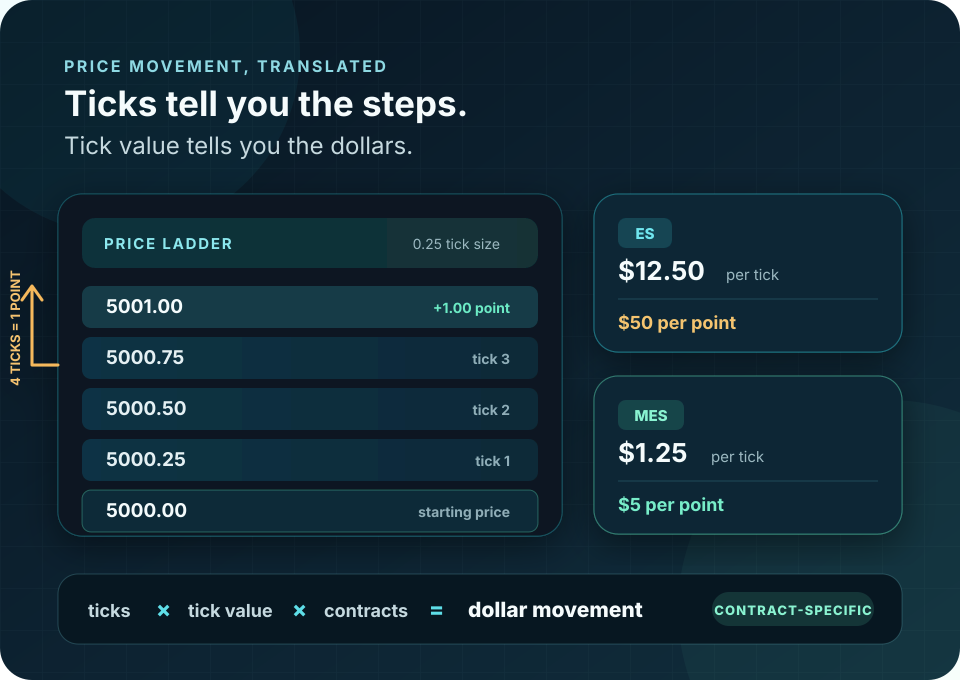

Futures contract math
Futures Ticks, Points and Dollar Value: Conversion Guide
A point tells you how far price moved. A tick tells you the contract’s minimum tradable step. Tick value and contract count determine what that move is worth in dollars.

Four terms, four different jobs
Tick, Tick Size, Tick Value and Point
These terms are related, but they are not interchangeable. Confusing them is how a small-looking chart move becomes a much larger dollar gain or loss than expected.
One minimum price step
The smallest permitted move in the outright futures price. If ES moves from 6000.00 to 6000.25, it moved one tick.
The quoted size of that step
ES and MES use 0.25 index points. RTY and M2K use 0.10. CL and MCL use $0.01 per barrel.
Dollars per tick, per contract
One ES tick is $12.50. One MES tick is $1.25. The tick size is the same; the contract multiplier is not.
One full quoted price unit
In index futures, traders commonly call a 1.00 move one point. The number of ticks inside that point depends on tick size.
The distinction that matters
Points Describe Distance. Ticks Price the Move.
“Ten points” is incomplete risk information. Ten ES points equal $500 per contract. Ten MES points equal $50. Ten NQ points equal $200. Ten MNQ points equal $20.
The chart distance can be identical while the dollar exposure differs by a factor of ten. Contract symbol, tick size, tick value and contract count must stay attached to every stop, target and performance result.
The complete conversion
From Price Difference to Dollar P&L
Use the exact contract specification and keep the calculation in this order. A valid outright futures price should land on the contract’s tick grid.
Measure price movement
price move = |exit − entry|
Use the actual quoted prices, not the visual height of the candle.
Convert price to ticks
ticks = price move ÷ tick size
If the answer is not a whole number, one of the prices or the selected tick size is wrong.
Convert ticks to dollars
dollars = ticks × tick value × contracts
Apply long or short direction, then subtract commissions and slippage for net P&L.
Worked MES example
6000.00 to 6003.25, two contracts
- Price move3.25 points
- Ticks3.25 ÷ 0.25 = 13
- Per contract13 × $1.25 = $16.25
- Two contracts$16.25 × 2 = $32.50
Interactive calculator
Calculate Ticks, Price Movement and Dollar P&L
Select a common outright contract or enter a custom tick size and tick value. The calculator does not include commissions, exchange fees, spread cost or slippage.
Calculated result
What the move is worth
The entry-to-exit distance equals 13 whole MES ticks.
Planning boundary: this is gross mathematical P&L. Actual fills, commissions, fees and slippage change the realized result.
Common outright contracts
Tick Size and Tick Value Are Contract-Specific
The table uses outright futures increments. Calendar spreads and options can trade in different increments. Exchange specifications can change, so confirm the live product page before trading.
Equity index futures
| Contract | Symbol | Tick size | Tick value | One-point conversion |
|---|---|---|---|---|
| Micro E-mini S&P 500 | MES | 0.25 | $1.25 | 4 ticks = $5 |
| E-mini S&P 500 | ES | 0.25 | $12.50 | 4 ticks = $50 |
| Micro E-mini Nasdaq-100 | MNQ | 0.25 | $0.50 | 4 ticks = $2 |
| E-mini Nasdaq-100 | NQ | 0.25 | $5.00 | 4 ticks = $20 |
| Micro E-mini Russell 2000 | M2K | 0.10 | $0.50 | 10 ticks = $5 |
| E-mini Russell 2000 | RTY | 0.10 | $5.00 | 10 ticks = $50 |
Energy, metals and FX futures
| Contract | Symbol | Tick size | Tick value | Useful conversion |
|---|---|---|---|---|
| Micro WTI Crude Oil | MCL | $0.01 per barrel | $1.00 | $1.00 move = 100 ticks = $100 |
| WTI Crude Oil | CL | $0.01 per barrel | $10.00 | $1.00 move = 100 ticks = $1,000 |
| Micro Gold | MGC | $0.10 per ounce | $1.00 | $1.00 move = 10 ticks = $10 |
| Gold | GC | $0.10 per ounce | $10.00 | $1.00 move = 10 ticks = $100 |
| Euro FX | 6E | 0.00005 USD per EUR | $6.25 | 0.00010 move = 2 ticks = $12.50 |
| Micro EUR/USD | M6E | 0.00010 USD per EUR | $1.25 | 0.00010 move = 1 tick = $1.25 |
Do not substitute one number for another
Tick Value, Notional, Margin and Planned Risk Answer Different Questions
All four can be expressed in dollars, but they measure different parts of a futures position. A small margin requirement does not cap the loss, and a large notional value does not tell you what a properly placed stop will cost.
What is one minimum move worth?
tick size × contract multiplier
ES: 0.25 × $50 = $12.50 per tick.How much underlying exposure does one contract represent?
futures price × contract multiplier
Hypothetical ES at 6000: 6000 × $50 = $300,000.How much performance bond is required?
Current exchange and broker requirement
It can change and is not maximum loss; retrieve it live from the broker.What does the chosen stop risk?
stop ticks × tick value × contracts + estimated costs
One ES with an eight-point stop: 32 ticks × $12.50 = $400 before costs.Same chart distance, different money
What a 10-Point Move Means Across Index Futures
All six rows describe the same quoted distance: 10.00 index points. Dollar value changes with the contract multiplier.
40 ticks × $1.25
40 ticks × $12.50
40 ticks × $0.50
40 ticks × $5.00
100 ticks × $0.50
100 ticks × $5.00
Applied tick math
One Tick of Slippage Can Multiply Across Accounts
A one-tick fill difference sounds small until it is multiplied by contracts and follower accounts. On NQ, one tick is $5 per contract. Two contracts copied to three follower accounts turn one tick into $30 of aggregate difference. If entry and exit each lose one tick, the round-trip difference becomes $60.
Tradecovex’s trade-copier latency guide applies this same conversion to copier slippage: ticks × tick value × contracts × accounts. Its execution examples are a useful application of the contract math; CME remains the source for the tick specifications themselves.
1 tick × tick value × contracts × follower accounts
Use tick value before the order
A Position-Sizing Workflow That Keeps the Units Straight
Tick math is not merely a post-trade P&L calculation. It is the bridge between a technically valid stop and a contract count the account can actually support.
-
01
Verify the contract
Confirm the symbol, contract month, outright tick size and tick value from the current exchange specification.
-
02
Place the structural stop
Choose the price that invalidates the setup. Do not move the stop closer merely to make a preferred size fit.
-
03
Convert the stop to ticks
Divide entry-to-stop distance by tick size. The result should be a whole number for a valid quoted price.
-
04
Price one contract
Multiply stop ticks by tick value, then add a conservative allowance for commissions and slippage.
-
05
Fit whole contracts
Divide the trade’s dollar risk budget by estimated loss per contract and round down. A result below one means pass.
Common unit errors
Six Ways Traders Misprice a Futures Move
Assuming every point has four ticks
That is true for ES and NQ outright futures, not for RTY, CL, GC, 6E or every other contract.
Using margin as maximum loss
Margin is collateral, not a stop. Dollar risk comes from stop ticks, tick value, contract count and execution costs.
Ignoring micro versus E-mini size
MES and ES share a 0.25 tick size, but one ES tick is ten times the dollar value of one MES tick.
Forgetting the contract multiplier
Price movement alone does not produce dollar P&L. The multiplier is what gives the move financial weight.
Mixing outrights, spreads and options
The same product family can use different tick increments for calendar spreads, option premiums or reduced-tick price ranges.
Rounding before the final step
Carry exact tick counts and per-contract risk through the calculation. Round the final contract count down, not the stop math.
Ten-second pre-trade check
Know These Five Numbers Before Entry
- 01Exact contract symbol and month
- 02Outright tick size
- 03Dollar value per tick
- 04Stop distance in whole ticks
- 05Total dollars at risk after costs
Sources and methodology
Official Contract Sources and Scope
Contract values below were checked August 17, 2026. They cover the named outright futures. They do not establish option, reduced-tick or calendar-spread increments.
- CME Group: Tick Movements for the exchange definition and ES/WTI examples.
- CME Group: Micro E-mini Equity Index Futures FAQ for MES, MNQ and M2K increments and values.
- CME Group: E-mini Russell 2000 Introduction for the RTY multiplier and tick.
- CME Group: Micro WTI Crude Oil Futures FAQ for the MCL and CL comparison.
- CME Group: Micro Gold Product Overview for the MGC and GC relationship.
- CME Group: FX Product Guide for the 6E and M6E contract sizes and outright ticks.
- Tradecovex: Trade Copier Latency Explained for the third-party applied example converting tick slippage into multi-account dollar cost.